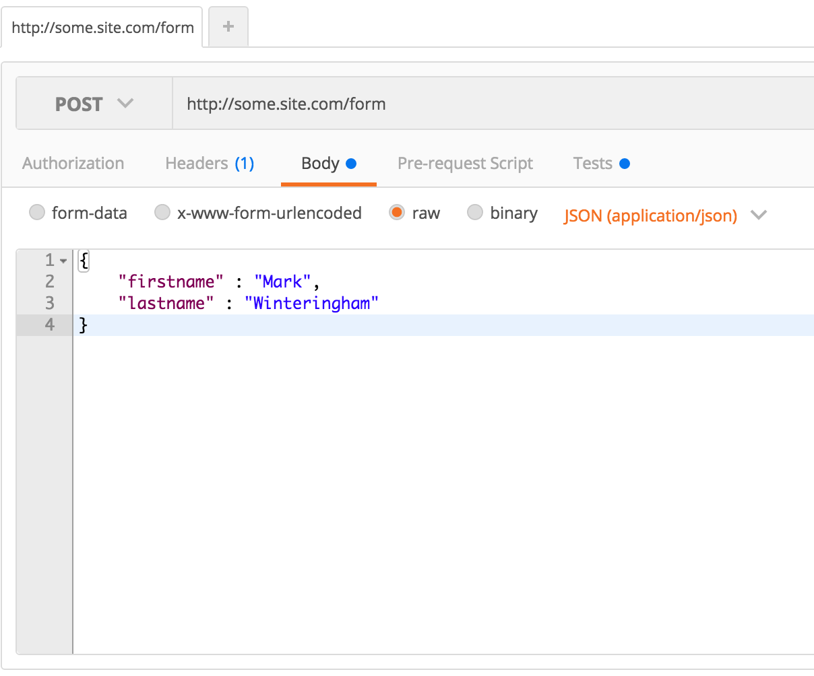
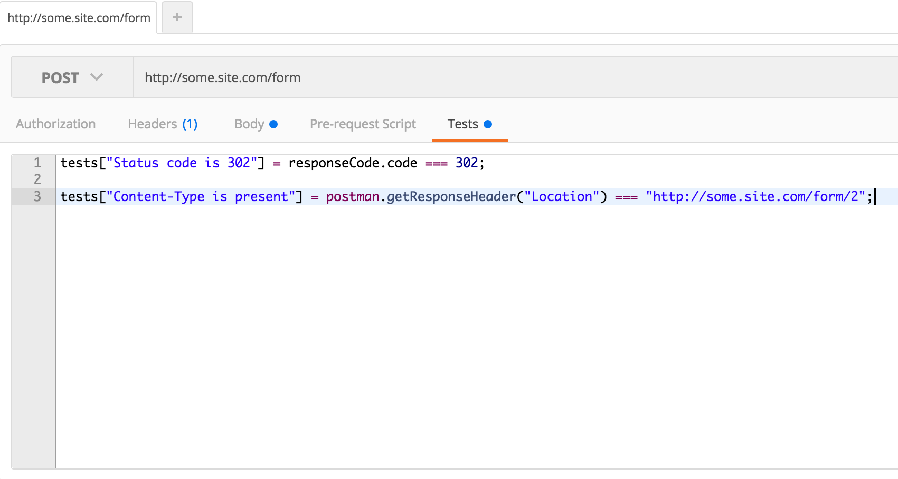
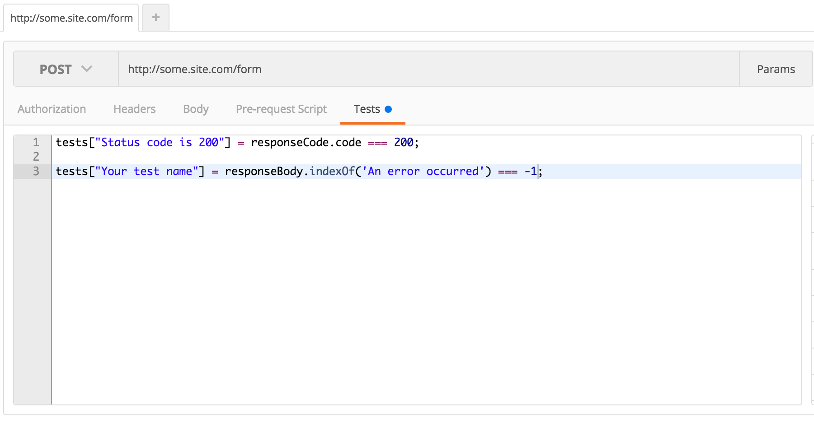

Say TaTTa to your TuTTu - Created by Mark Winteringham / @2bittester © 2016
Say TaTTa to your TuTTu
Anti-patterns in automation
 -
-  -
- 
Anti-patterns in our Automation
TuTTu
Automating a form check
Webdriver driver = new Webdriver();
driver.get("http://some.site.com/form");
driver.findElement(By.id("firstname")).sendKeys("Mark");
driver.findElement(By.id("lastname")).sendKeys("Winteringham");
driver.findElement(By.id("submit")).click();
String title = driver.getTitle();
assertThat(title, "The second page of the form");
Where is the anti-pattern?
- Checking that each browser renders the form correctly so it can be filled in by a human
- Checking that each browser takes us to the same page after submission
- Checking that each browser is using JavaScript correctly to create the form
Testing the UI or Testing Through the UI
Postman
 Rest-assured
given().
parameters("firstName", "Mark", "lastName", "Winteringham").
when().
post("/some.site.com/form").
then().
statusCode(304)
header(equalTo("http://some.site.com/form/2"));
'Checking validation is triggered on the form before submission'
Testing the UI or Testing Through the UI?
'Checking a record is created in the database on form submission'
Testing the UI or Testing Through the UI?
'Checking an edit version of the form contains previous values'
Testing the UI or Testing Through the UI?
'Checking a pop up appears when clicking a help icon next to a form field'
Testing the UI or Testing Through the UI?
'Checking the form uploads an attached PDF correctly'
Testing the UI or Testing Through the UI?
TaTTa
Rest-assured
given().
parameters("firstName", "Mark", "lastName", "Winteringham").
when().
post("/some.site.com/form").
then().
statusCode(200)
A Web Service example
 http://adrianmejia.com/blog/2014/10/01/creating-a-restful-api-tutorial-with-nodejs-and-mongodb/
http://adrianmejia.com/blog/2014/10/01/creating-a-restful-api-tutorial-with-nodejs-and-mongodb/
A '200' response
HTTP/1.1 200 OK
Content-Type: text/html
Connection: keep-alive
<body>
<p>An error occurred</p>
</body>Testing the API or Testing Through the API
Rest-assured
given().
parameters("firstName", "Mark", "lastName", "Winteringham").
when().
post("/some.site.com/form").
then().
statusCode(200)
body("html.body.p", isNot(equalTo("An error occurred")))
Postman
Unit check
public void testStorage() {
Datastore store = new Datastore();
Boolean result = store.createNewRecord("Mark", "Winteringham");
assertTrue(result);
}
'Checking a third party Web service can be accessed'
Testing the API or Testing Through the API?
'Checking a Web service evaluates data and returns a result'
Testing the API or Testing Through the API?
'Checking a Web service returns a record in the correct structure'
Testing the API or Testing Through the API?
'Checking a Web service handles overflow data such as an Integer'
Testing the API or Testing Through the API?
'Checking a redirect is returned after an unauthorised request is made'
Testing the API or Testing Through the API?
Questions?
Training
- Testing Web Services
- Friday 23rd September @ The Studio, Manchester
- Taking Automated Checking Beyond WebDriver
- Wednesday 30th September @ Manchester